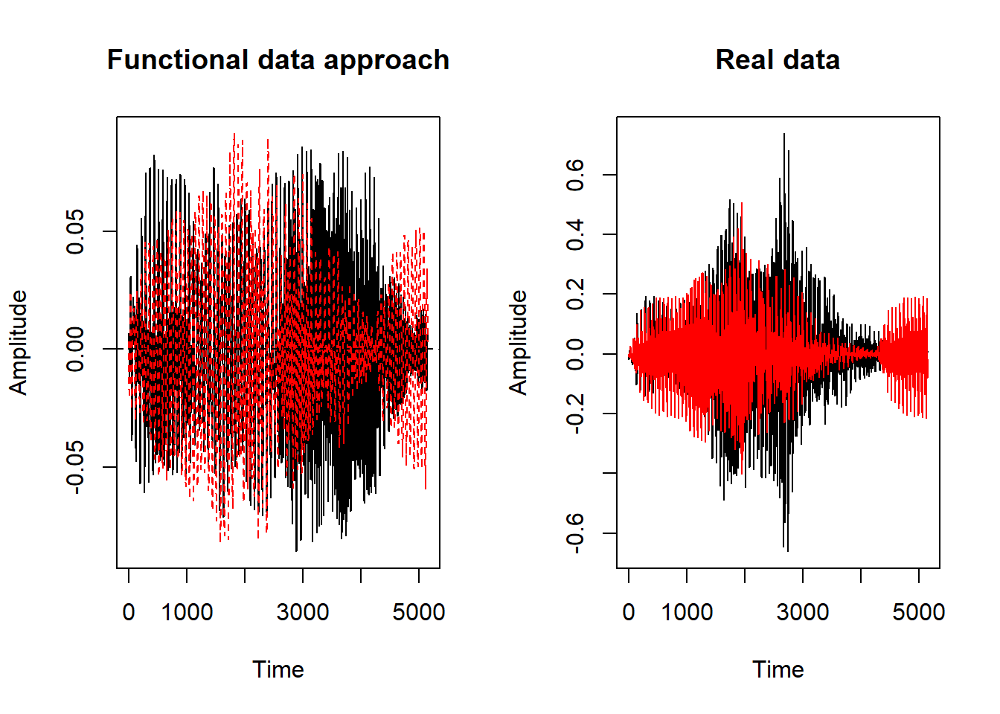
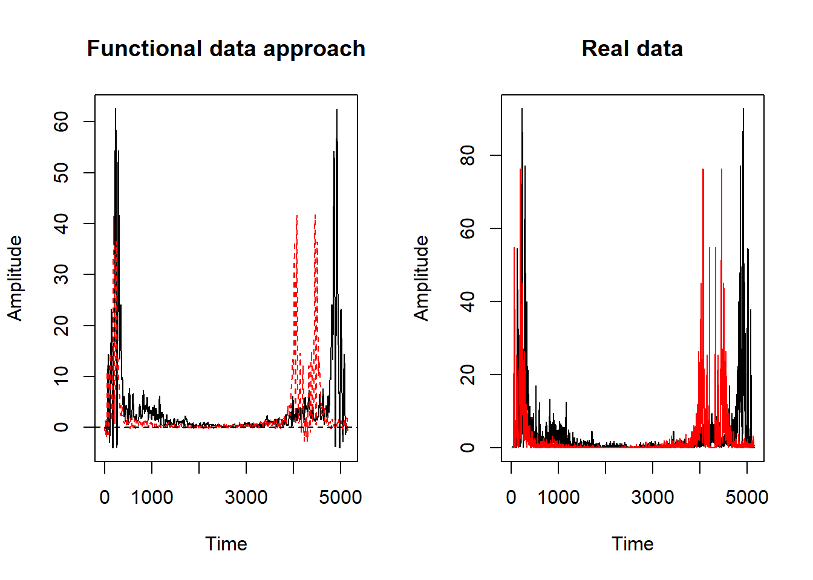

Voice to image with functional regression
Voice to image with functional regression
2020 | 07 | 23 Last compiled: 2020-09-29
In this section our focus will be in find a way to implement the functional regression with functional response to the MNIST problem. Our goal will be to a make a model where the response is a handwritte number and the covariable a voice note of the number. Due to the computational cost of this model, we will focus on a simple case, using only the number zero.
The voice data.
The first step in our analysis will be to study the behavior of our audio notes. We will represent two voice note using functional data.
library(seawaveQ)## Loading required package: survival## Loading required package: NADA##
## Attaching package: 'NADA'## The following object is masked from 'package:stats':
##
## cor## Loading required package: lubridate##
## Attaching package: 'lubridate'## The following object is masked from 'package:base':
##
## datelibrary(audio)
library(fda.usc)## Loading required package: fda## Loading required package: splines## Loading required package: Matrix##
## Attaching package: 'fda'## The following object is masked from 'package:graphics':
##
## matplot## Loading required package: MASS## Loading required package: mgcv## Loading required package: nlme## This is mgcv 1.8-26. For overview type 'help("mgcv-package")'.## -----------------------------------------------------------------
## Functional Data Analysis and Utilities for Statistical Computing
## fda.usc version 2.0.0 (built on 2019-11-11) is now loaded
## fda.usc is running sequentially usign foreach package
## Please, execute ops.fda.usc() once to run in local parallel mode
## -----------------------------------------------------------------library(stats)#Loading the data audio of the spoken numbers
s0<-load.wave(where = "spoken/datos/0_jackson_0.wav")
s1<-load.wave(where = "spoken/datos/0_jackson_1.wav")
sc<-cbind(s0,s1)## Warning in cbind(s0, s1): number of rows of result is not a multiple of
## vector length (arg 2)#Making the functional data
nbx<-291
basisx <- create.fourier.basis(c(0,5148),nbasis = nbx )
fds<-Data2fd((sc),seq(0,5148,length=5148),basisobj = basisx)## Swapping 'y' and 'argvals', because 'y' is simpler,
## and 'argvals' should be; now dim(argvals) = 5148 ; dim(y) = 5148 x 2par(mfrow=c(1,2))
plot(fds,main="Functional data approach",xlab="Time",
ylab="Amplitude")## [1] "done"plot.ts(sc[,1],main="Real data",xlab="Time",
ylab="Amplitude")
lines(sc[,2], col = "red") We have used a 291 elements of the Fourier basis. It is a very large number of elements, and the approximation isn’t as good as we expect. The problem here is that our data is very rough. We will make a discrete Fourier transform of the data (we want to work in frequency domain) to make easier the approximation. We will also work in absolute value for ease.
#We make a fast discrete fourier transform
s0t<-fft(s0)
s0t<-abs(s0t)
s1t<-fft(s1)
s1t<-abs(s1t)
sct<-cbind(s0t,s1t)
#Making the functional data
nbx<-291
basisx <- create.fourier.basis(c(0,5148),nbasis = nbx )
fdst<-Data2fd((sct),seq(0,5148,length=5148),basisobj = basisx)## Swapping 'y' and 'argvals', because 'y' is simpler,
## and 'argvals' should be; now dim(argvals) = 5148 ; dim(y) = 5148 x 2par(mfrow=c(1,2))
plot(fdst,main="Functional data approach",xlab="Time",
ylab="Amplitude")## [1] "done"plot.ts(sct[,1],main="Real data",xlab="Time",
ylab="Amplitude")
lines(sct[,2], col = "red")
As we can see, the approximation is much better than the first attempt.
temp = list.files(pattern="*wav")
myfiles = lapply(temp, load.wave)
M<-matrix(data=0,nrow = 50,ncol = 6273)
for (i in 1:50) {
M[i,1:length(myfiles[[i]])]<-myfiles[[i]]
}
#Our functional covariable
x<-abs(t(fft(M)))
nbx<-51
basisx <- create.fourier.basis(c(0,6273),nbasis = nbx )
SFD<-Data2fd((x),seq(0,6273,length=6273),basisobj = basisx)## Swapping 'y' and 'argvals', because 'y' is simpler,
## and 'argvals' should be; now dim(argvals) = 6273 ; dim(y) = 6273 x 50The MNIST dataset.
The following image shows a set of handwritten numbers from the MNIST data set.

The dataset has 785 colums. The firts one indicates the value of the handwrite number and the next 784 the value of the pixels. This pixel form a 28x28 image.
train<-read.csv(file = "spoken/datos/train.csv")We only will work with the number 0. Since we just have 50 voice note of the number 0, we will only take 50 random 0 from the dataset.
set.seed(12345)
ii<-which(train$label==0)
index<-sample(ii,50)
ll<-sample(1:50,10)
#Our functional response model
y <-t(train[index,2:ncol(train)])
nby<-181
basisy<- create.fourier.basis(c(0,784),nbasis = nby )
DFD<-Data2fd((y),seq(0,784,length=784),basisobj = basisy)## Swapping 'y' and 'argvals', because 'y' is simpler,
## and 'argvals' should be; now dim(argvals) = 784 ; dim(y) = 784 x 50Functional reggression with functional response.
The model we will use will be the one proposed by Ramsay and Silverman. It is a penalized functional regression. This penalty is necessary to avoid the problem of sparsity, because the estimation of the model depends on determining the inverter of a matrix whose dimension is the number of elements of the base chosen. The greater this number of elements, the more difficult it will be to find an inverse of this matrix. The model has the form:
\[Y_{i}(t)=\alpha(t)+\int \beta(t,s)X_{i}(s)ds+\epsilon_{i}(t)\]
The model estimate is given as:
\[vec(\mathbf{\widehat{B}})=[J_{\theta \theta}\otimes(\mathbf{X}'\mathbf{X})+\lambda_{s}J_{\theta \theta}\otimes\mathbf{R}+\lambda_{t}\mathbf{Q}\otimes J_{\eta \eta}]^{-1}(J_{\phi \theta}\otimes \mathbf{X}')vec(\mathbf{C})\] where
\[[J_{\theta \theta}\otimes (\mathbf{X}' \mathbf{X} )]vec(\mathbf{B} )=vec\left(\mathbf{X}' \int Y(t)\theta ' (t) dt \right) \]
Now we are going to implement all this ideas
lambdas<-1
lambdat<-1
tini <- proc.time()
res.fr = fregre.basis.fr(datosf[-ll],datosfN[-ll],basisx,basisy,lambda.s = lambdas,lambda.t = lambdat,Lfdobj.s = 1,Lfdobj.t = 1)
proc.time() - tini## user system elapsed
## 283.14 2.25 285.42prf<-predict(res.fr,datosf[ll],basisobj = basisy)
pr<-eval.fd(prf,seq(0,784,length=784))To determine if our model is capable of creating handwritten number images, we will only draw the output of our model using the test set.
A1<-matrix(as.double(pr[,4]),nrow = 28,byrow = T)
rotate <- function(x) t(apply(x, 2, rev))
image(rotate(A1))#Making the pixels that have values less than 30 be 0.
jj<-which(pr[,4]<50)
pr[jj,4]=0
A1<-matrix(as.double(pr[,4]),nrow = 28,byrow = T)
image(rotate(A1))The results are not entirely good, but we can clearly see that it is a 0. On the other hand, it should be noted that we are only working with a very low number of base elements. As we increase the number of elements, the resolution of the image also increases.
I wrote an introductory programming book that introduces R, and gives some concrete problems for you to solve.